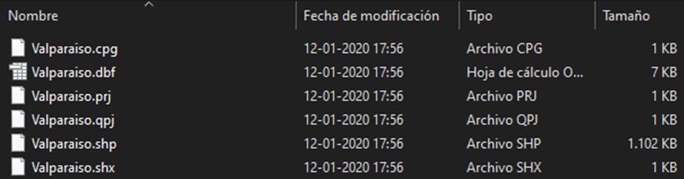
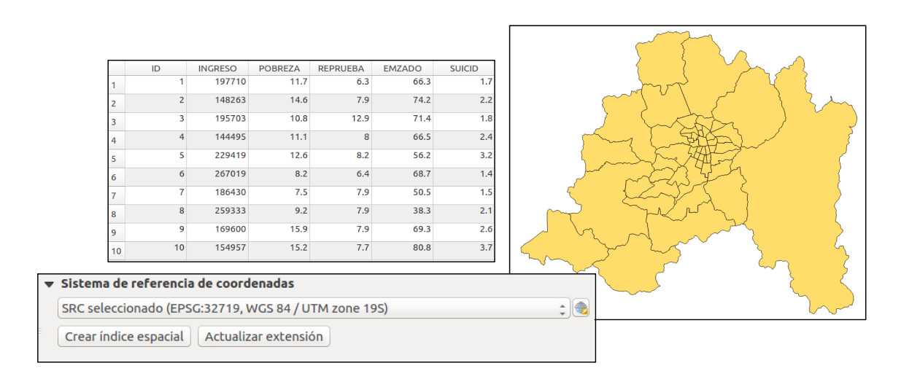

Modelo vectorial
La tipología de datos vectorial es utilizada en la representación de superficies planas. Sus formatos son variados y dependen del software SIG utilizado. Los más habituales son ficheros con extensiones .shp, .dgn, .dwg, .dxf y .dxn. De estos, el más conocido es el shapefile (.shp) el cual está compuesto de: un referente gráfico (.shx), una geometría (.shp), una proyección (.prj), una tabla de atributos o base de datos anexada (.dbf) y un metadato (xml).

Ilustración: LABGRS, 2020.
Lo importante, es tener en cuenta que todos estos elementos deben estar presentes en un mismo directorio, sino el archivo no podrá leerse y no podrá consultarse su información:

Ilustración: LABGRS, 2020.